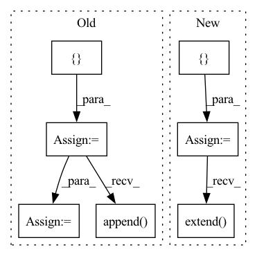

Pattern ID :23796
Before Change
FusedLeakyReLU(resl2ch[128])
)
layers = []
for resl in list(resl2ch.keys())[::-1]:
layers += [
ResBlock(resl2ch[resl], resl2ch[resl//2])
]
if resl == list(resl2ch.keys())[1]:
break
layers.append( MiniBatchStd())
layers += [
EqualizedConv2d(resl2ch[4]+1, resl2ch[4], 3, padding=1, bias=False),
FusedLeakyReLU(resl2ch[4]),
Flatten(),After Change
nn.LeakyReLU(0.2, inplace=True)
)
resl = image_size
blocks = []
while resl > 4:
resl = resl // 2
channels *= 2
ichannels, ochannels = ochannels, check_c(channels)
blocks.append(
DBlock(ichannels, ochannels, block_num_conv)
)
blocks.append(MiniBatchStdDev(mbsd_groups))
blocks.extend( [
Conv2d("elr", ochannels+1, ochannels, 3, padding=1),
nn.LeakyReLU(0.2, inplace=True),
Flatten(),
Linear("elr", ochannels*(resl**2), ochannels),
nn.LeakyReLU(0.2, inplace=True),
Linear("elr", ochannels, 1)
])
self.blocks = nn.Sequential(*blocks)
def forward(self, x):
x = self.from_rgb(x)
x = self.blocks(x)In pattern: SUPERPATTERN
Frequency: 3
Non-data size: 7
Instances Fragment ID: 74271593
Project Name: stomoya/animeface
Commit Name: b3652bae109c713da926d5532eb014b02135da52
Time: 2020-12-14
Author: blackie0110@gmail.com
File Name: implementations/StyleGAN2/model.py
M Class Name: Discriminator
N Class Name: Discriminator
M Method Name: __init__(7)
N Method Name: __init__(1)
M Parent Class: nn.Module
N Parent Class: nn.Module
M File Name: implementations/StyleGAN2/model.py
N File Name: implementations/StyleGAN2/model.py
M Start Line: 354
M End Line: 387
N Start Line: 364
N End Line: 389
Before Change
batch_size=self.poison_num, num_workers=0)
target_imgs, _ = self.model.get_data(next(iter(target_dataloader)))
dataset_list = [ target_class_datasetdataset_list.append( poison_set)
dataset_list.append(other_source_class_dataset)
final_set = torch.utils.data.ConcatDataset(dataset_list)
final_loader = self.dataset.get_dataloader(mode="train", dataset=final_set, num_workers=0)
self.model._train(optimizer=optimizer, lr_scheduler=lr_scheduler, save_fn=self.save,After Change
other_classes = list(range(self.dataset.num_classes))
other_classes.pop(self.target_class)
x_list = []
y_list = []
for source_class in other_classes:
source_class_dataset = self.dataset.get_dataset(mode="train", full=True, classes=[source_class])
poison_source_class_dataset, _ = self.dataset.split_set(
source_class_dataset, self.poison_num)
poison_source_class_dataloader = self.dataset.get_dataloader(mode="train", dataset=poison_source_class_dataset,
batch_size=self.poison_num, num_workers=0)
source_imgs, _ = self.model.get_data(next(iter(poison_source_class_dataloader)))
gan_data = torch.cat([source_imgs, target_imgs])
self.wgan.reset_parameters()
self.wgan.train(gan_data)
source_encode = self.wgan.get_encode_value(source_imgs, self.poison_num).detach()
target_encode = self.wgan.get_encode_value(target_imgs, self.poison_num).detach()
interpolation_encode = source_encode * self.tau + target_encode * (1 - self.tau)
poison_imgs = self.wgan.G(interpolation_encode).detach()
poison_imgs = self.add_mark(poison_imgs)
poison_label = [self.target_class] * len(poison_imgs)
poison_imgs = poison_imgs.to("cpu")
x_list.append(poison_imgs)
y_list.extend( poison_label)
x_list = torch.cat(x_list)
final_set = MyDataset(x_list, y_list)
final_loader = self.dataset.get_dataloader(mode="train", dataset=final_set, num_workers=0)
self.model._train(optimizer=optimizer, lr_scheduler=lr_scheduler, save_fn=self.save,
loader_train=final_loader, validate_func=self.validate_func, **kwargs) Fragment ID: 74271580
Project Name: ain-soph/trojanzoo
Commit Name: 8983bfb499fcecbf4afd1e1301d4dbe47fa54b45
Time: 2020-08-14
Author: ain-soph@live.com
File Name: trojanzoo/attack/backdoor/clean_label.py
M Class Name: Clean_Label
N Class Name: Clean_Label
M Method Name: attack(3)
N Method Name: attack(3)
M Parent Class: BadNet
N Parent Class: BadNet
M File Name: trojanzoo/attack/backdoor/clean_label.py
N File Name: trojanzoo/attack/backdoor/clean_label.py
M Start Line: 81
M End Line: 117
N Start Line: 89
N End Line: 122
Before Change
if query_num is None:
query_num = self.query_num
sigma = self.sigma
seq = [ X.clone()seq.append( X2)
if query_num % 2 == 1:
seq.append(X)
elif self.grad_method == "sgd":
for i in range(query_num):After Change
noise = sigma * torch.normal(mean=0.0, std=1.0, size=shape, device=X.device)
zeros = torch.zeros_like(X)
seq = [ zerosseq.extend( [noise, -noise])
if query_num % 2 == 1:
seq.append(zeros)
elif self.grad_method == "sgd":
seq.append(noise)
elif self.grad_method == "hess":
noise = self.hess.mm(noise.view(-1, 1)).view(X.shape)
seq.append(noise)
elif self.grad_method == "zoo":
raise NotImplementedError(self.grad_method)
else:
print("Current method: ", self.grad_method)
raise ValueError("Argument "method" should be "nes", "sgd" or "hess"!")
seq = torch.cat(seq).add(X)
return seq
def calc_seq(self, f: Callable, seq: torch.Tensor) -> torch.Tensor: Fragment ID: 74271585
Project Name: ain-soph/trojanzoo
Commit Name: bc3d366258b45942115b6b86ae8466dac52ac154
Time: 2020-06-30
Author: ain-soph@live.com
File Name: trojanzoo/optim/pgd.py
M Class Name: PGD
N Class Name: PGD
M Method Name: gen_seq(3)
N Method Name: gen_seq(3)
M Parent Class: Optimizer
N Parent Class: Optimizer
M File Name: trojanzoo/optim/pgd.py
N File Name: trojanzoo/optim/pgd.py
M Start Line: 152
M End Line: 174
N Start Line: 154
N End Line: 178